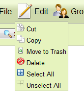
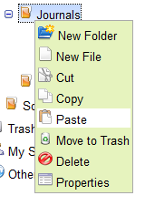
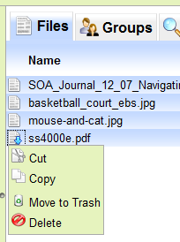
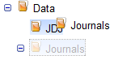
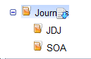
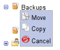

Μενού Edit

Folder context menu

File context menu
Το σύστημα τηρεί τις γνωστές συμβάσεις:
Οι σχετικές εντολές (copy, cut, paste) είναι προσβάσιμες μέσω του μενού "Edit" και μέσω
των folder & file context menus:
|

Μενού Edit |
Folder context menu |
File context menu |
Η εντολή "Paste" εμφανίζεται στο μενού "Edit" και στο folder context menu όταν υπάρχει
στοιχείο στο clipboard από Copy ή Cut (καταλόγου, αρχείου, ή πολλαπλής επιλογής αρχείων).
Η λειτουργία paste εκτελείται πάνω στο επιλεγμένο κατάλογο.

Μενού Edit - Paste στον επιλεγμένο κατάλογο |

Folder context menu - Paste στον επιλεγμένο κατάλογο |
Το σύστημα υποστηρίζει πολλαπλή επιλογή αρχείων για ομαδική αντιγραφή - μεταφορά.
Η επιλογή γίνεται με τον τυπικό τρόπο χρήσης των shift / crtl σε
συνδυασμό με το left mouse click, ή μέσω των επιλογών "Select All" / "Unselect All"
του μενού "Edit". Δεδομένης της πολλαπλής επιλογής, η διαδικασία πραγματοποιείται
όπως και για μεμονωμένο αρχείο. Η παρακάτω εικόνα δείχνει ένα παράδειγμα πολλαπλής
επιλογής αρχείων και το context menu με τις επιλογές.
|

Πολλαπλή επιλογή αρχείων - Context menu |
Το σύστημα υποστηρίζει drag and drop για καταλόγους και αρχεία για την αντιγραφή ή
μεταφορά τους σε άλλο κατάλογο. Το drag καταλόγων γίνεται πάνω στο εικονίδιο ή το όνομά
τους, ενώ των αρχείων μόνο από το εικονίδιο και αφού πρώτα επιλεγεί το αρχείο (με left
mouse click). Οι παρακάτω εικόνες δείχνουν παράδειγμα drag and drop καταλόγου και αρχείου:
|

Drag & drop καταλόγου σε άλλο κατάλογο |

Drag & drop αρχείου σε κατάλογο |
Αφήνοντας (drop) το επιλεγμένο στοιχείο στον κατάλογο-προορισμό το σύστημα εμφανίζει
κατάλληλο μενού με το οποίο ο χρήστης επιλέγει: (α) αντιγραφή, (β) μεταφορά, ή (γ) ακύρωση
της ενέργειας, όπως φαίνεται στην παρακάτω εικόνα. Ισχύουν όλα όσα περιγράφηκαν παραπάνω και
σε αυτή την περίπτωση αντιγραφής-μεταφοράς.
|

Μενού λειτουργίας drag & drop στον κατάλογο προορισμού (στο παράδειγμα "Journals") |